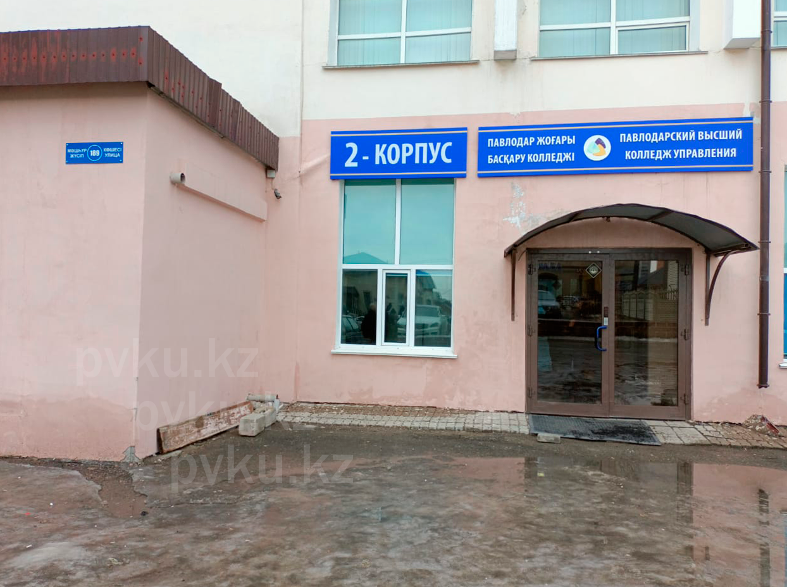
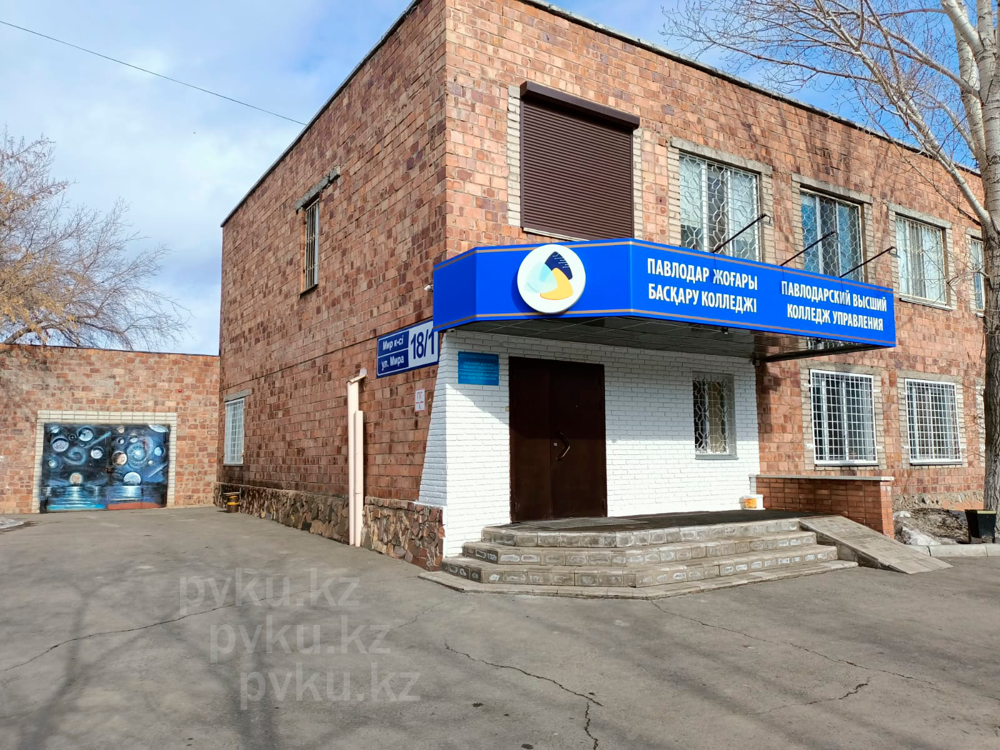
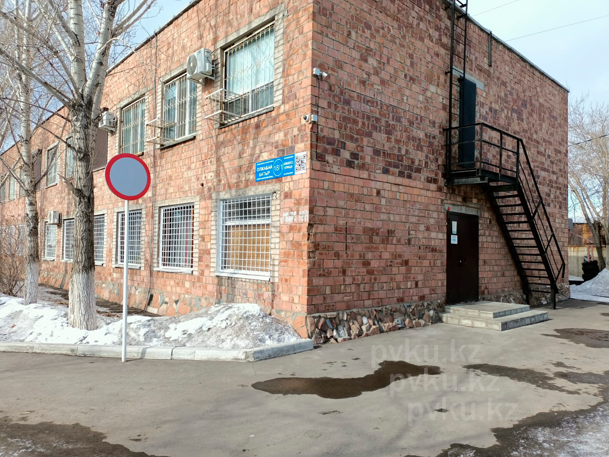
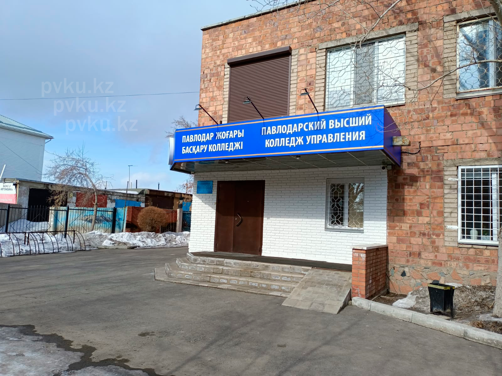
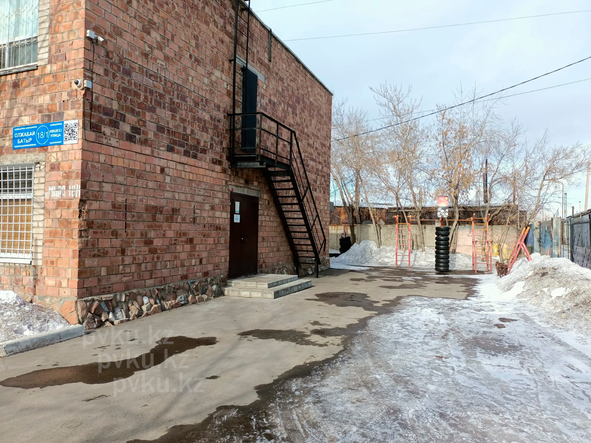

notdiff
🎨 Цвет
🖌️ Фон
📄 Расписание
До начала/конца пары осталось
...
Группа:
Выбор фона
URL:
Установить как фон
Выбор цвета
Границы:
Применить
Фон элементов:
Применить
Текст:
Применить
О сайте
Создатели:
Никита П.
& Рамиль Г.
Сайт Таймер ПВКУ начал свой путь с простой программы в консоли и развился до полноценного сайта.
Павлодарский высший колледж управления
: улица Мира 18/1
Второй корпус: улица Машхур Жусупа, 189
Инстаграм колледжа:
pavlpku
. Онлайн портал
Мудл
Галерея:




